2026
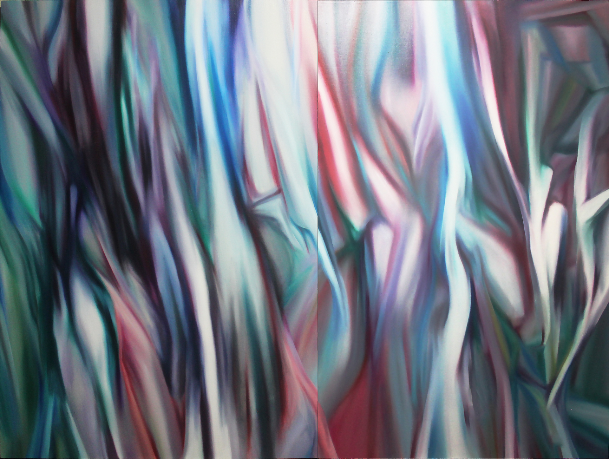
Forest
Concept Statement
そもそも、この「森林」シリーズの端緒は、生命を育む母体（マトリックス）としての森を、根源的な「うねり」として捉えることから始まりました。自然界を構成するあらゆる物質を微視的に捉えれば、すべては原子の集積と波動に還元されます。当初は、その波動力学的なエネルギーの奔流から分岐するように、画面の端から端までを一気に貫く長いストロークを用いていました。それは光や風の軌跡といった動的な要素を孕みながら、無数の幹の連なりを生み出し、空間を物理的なマチエールとして立ち上げる試みでした。
しかし近年、その表現はより微細で細かい筆致へと移行しています。無数の絵の具の粒子がキャンバス上で極限まで凝集していく過程で、私は「森はやがて岩に近づくのではないか」という確信を深めました。かつてバロック時代の人々が、人工と自然が渾然一体となったグロッタ（洞窟）や「岩の森」に宇宙の真理を見出し、物質の無限の襞（ひだ）のなかに生命の躍動を感じ取ったように。微視的な筆致の堆積は、有機的な植物相を、悠久の地質学的時間を内包した強固な鉱物へと変容させます。それは単なる風景の表象を超え、生命と無機物、波と粒子が交錯する、世界（あるいは単位世界）そのものの構造をキャンバスに現前させる行為なのです。
森林系列作品年譜 — 2018-2026


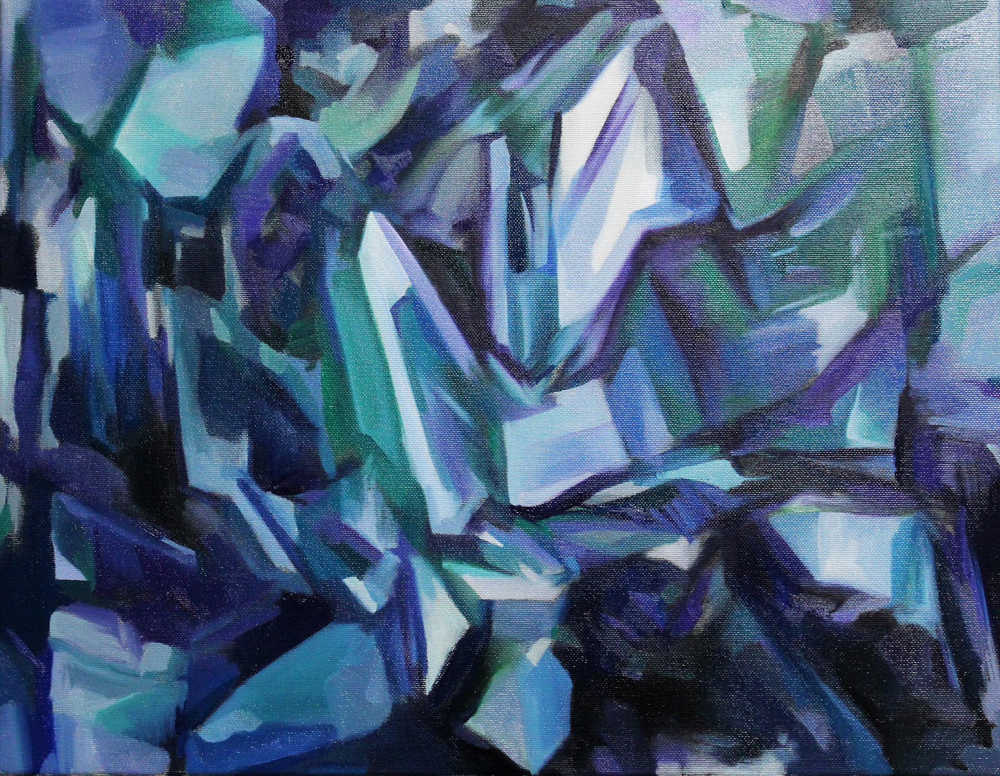
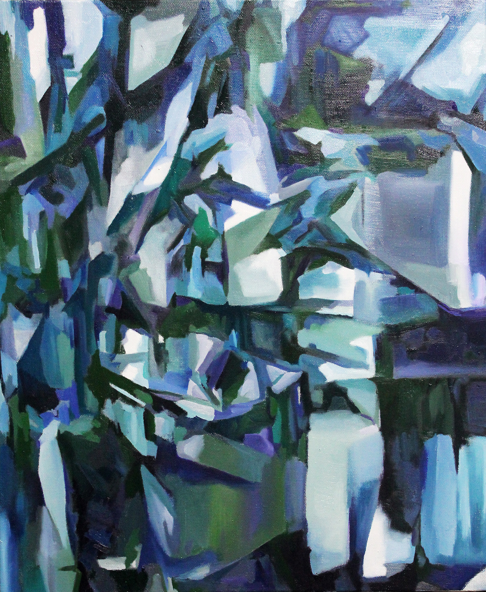
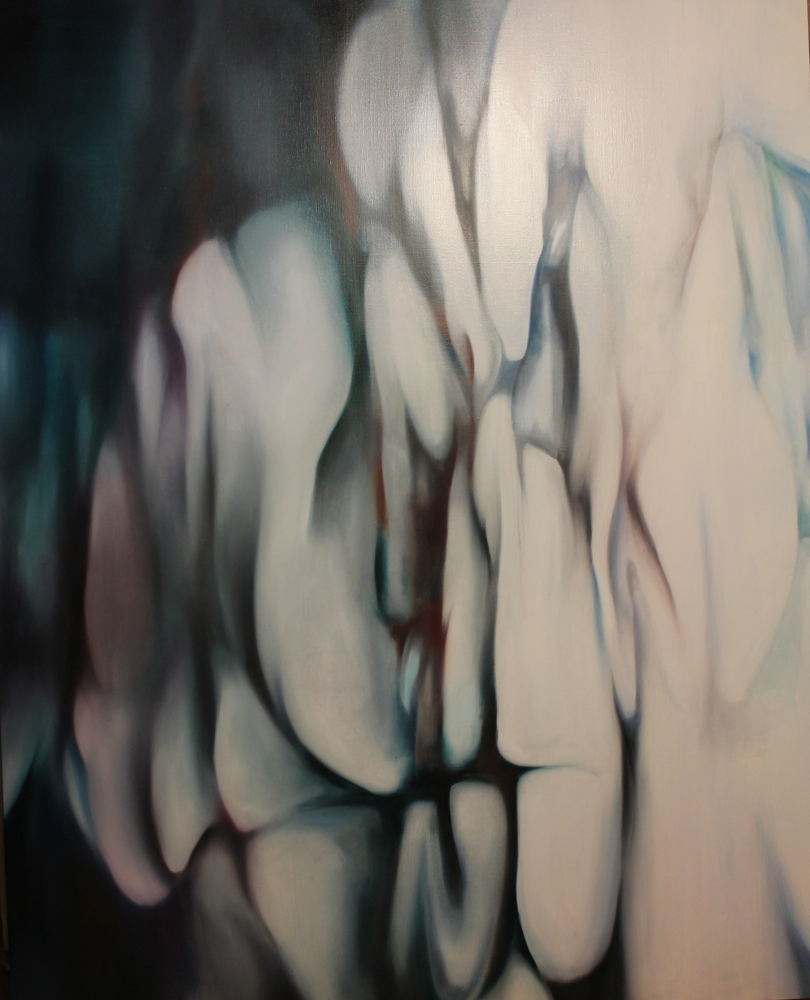
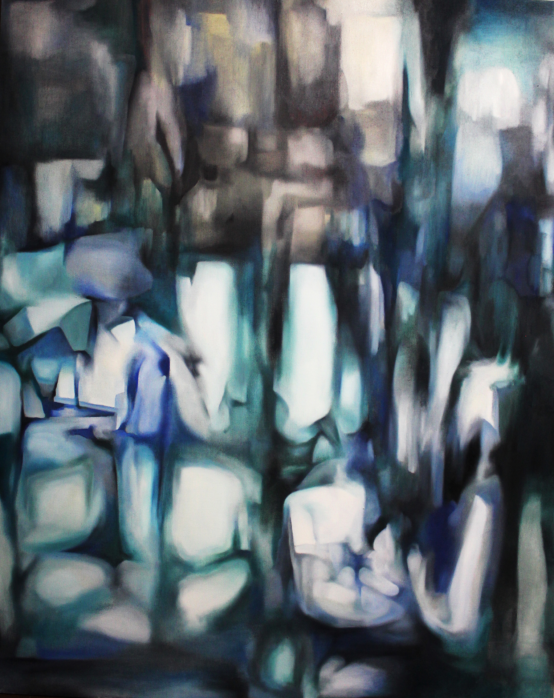
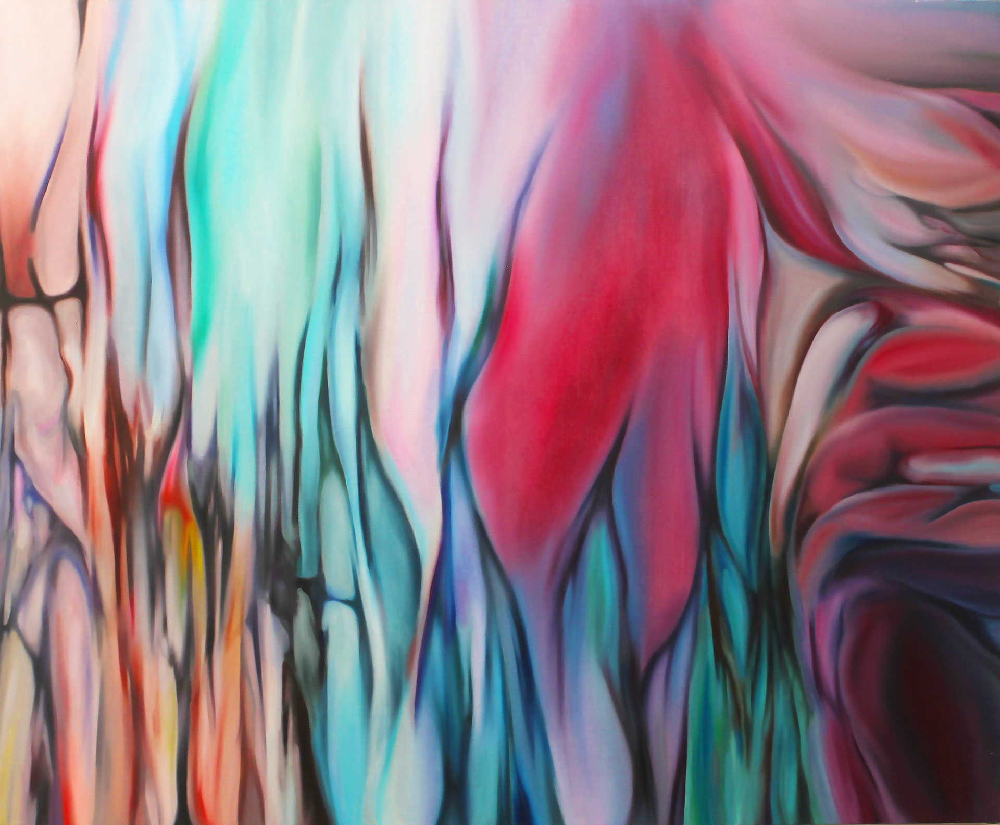
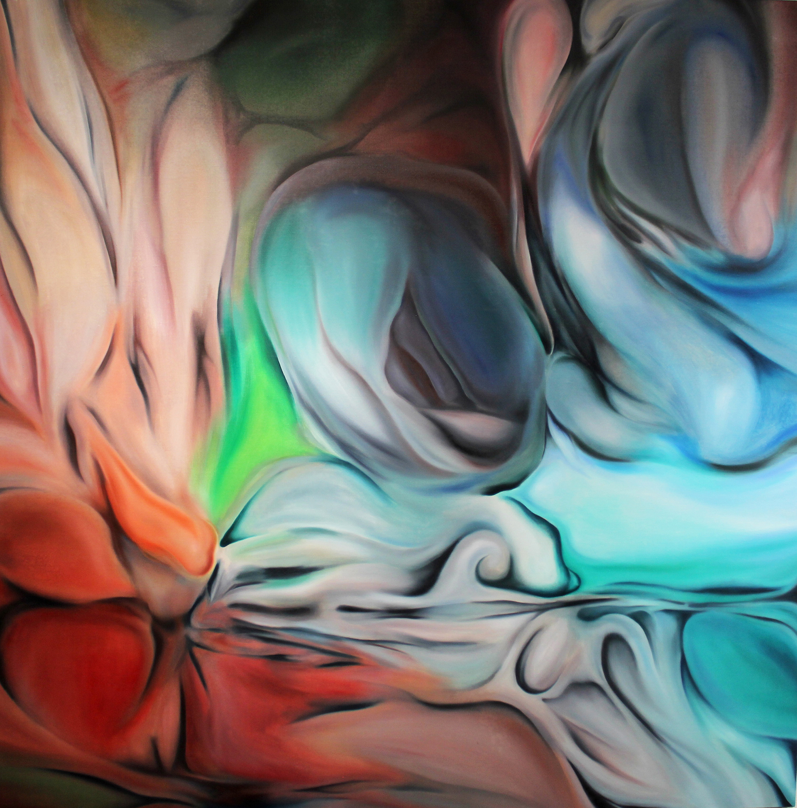
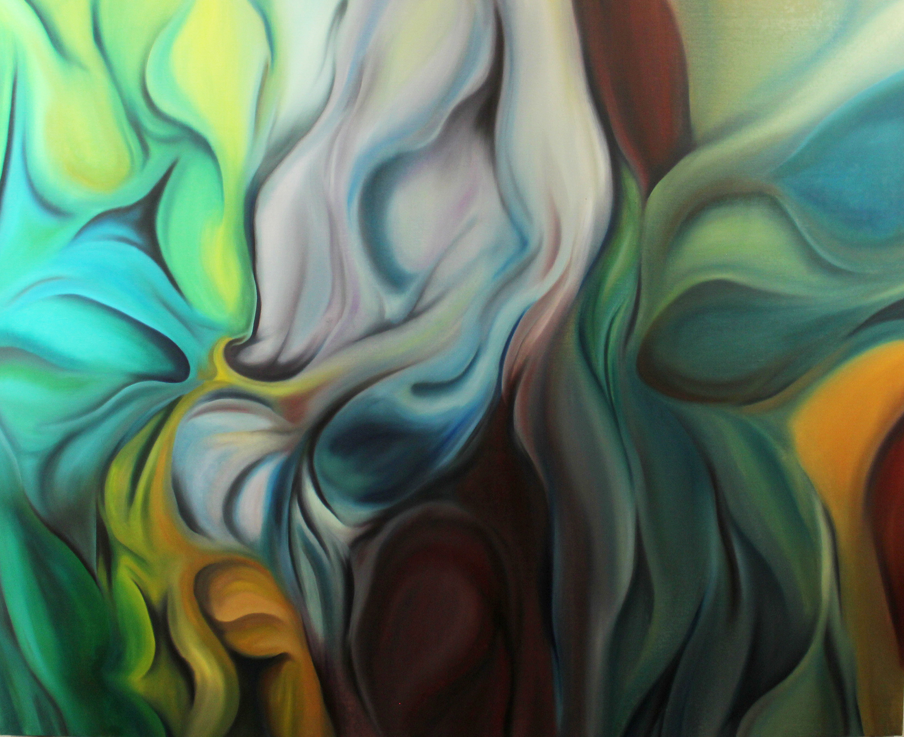
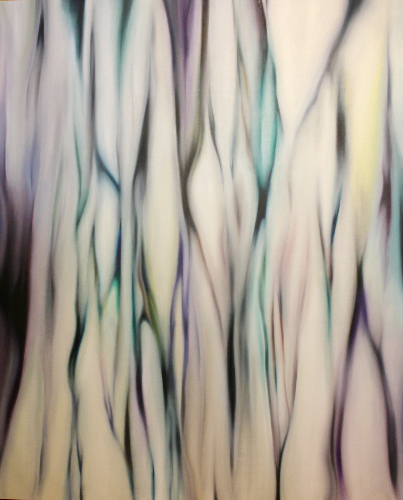
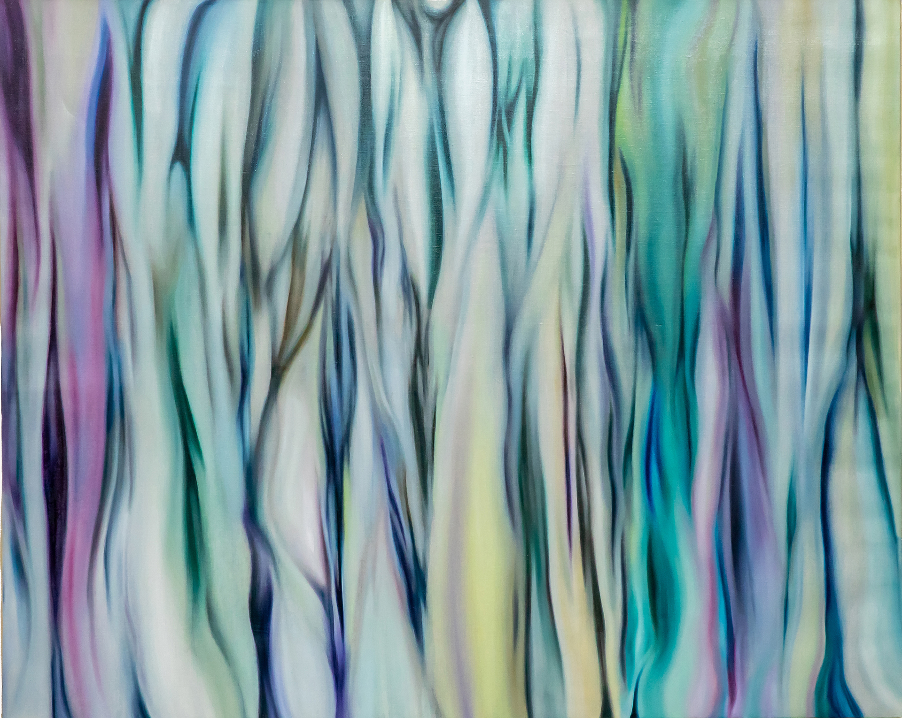
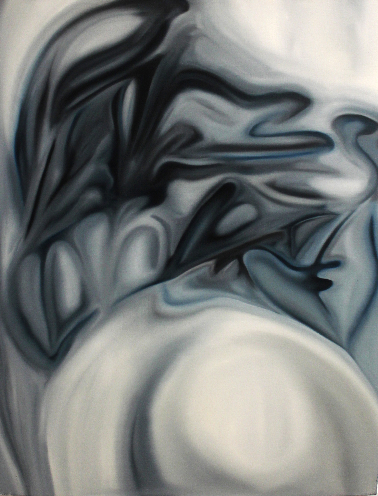
Contact
展覧会・作品購入・取材等に関するご相談は、
下記フォームよりお気軽にご連絡ください。